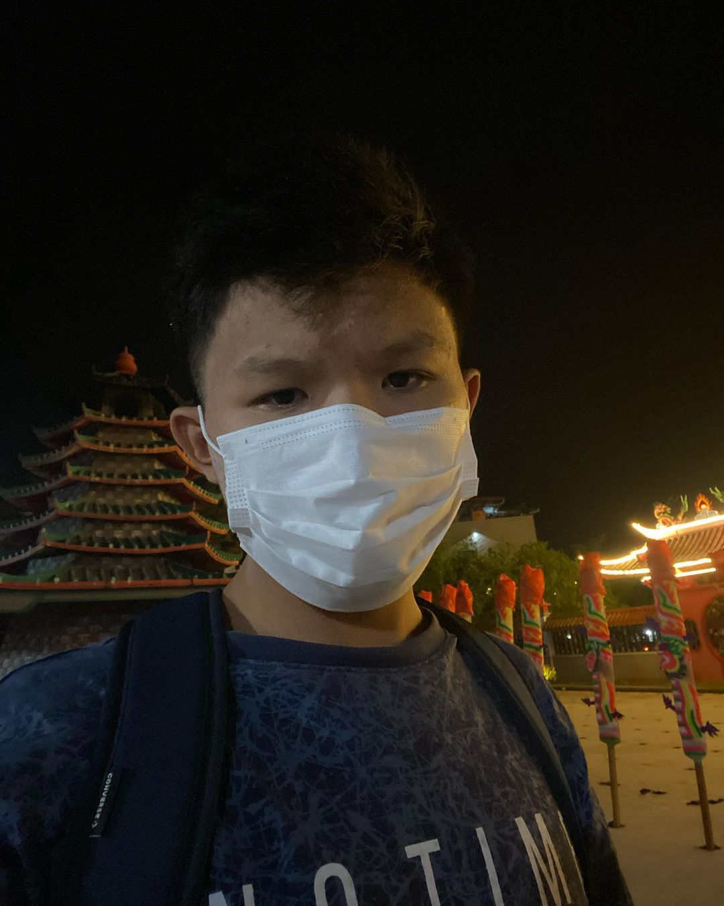

Hansen Jonatan
Content Creator | Web Developer

Hansen Jonatan di Vihara Budhi Bhakti , Kota Batam
Berikut Riwayat Hidup dari Hansen Jonatan
- 2004 - Lahir di kota Palembang
- 2009 - Menempuh pendidikan di TK Maitreyawira Batam
- 2011 - Menempuh pendidikan di SD Maitreyawira Batam
- 2016 - Menempuh pendidikan di SMP Maitreyawira Batam
- 2019 - Menempuh pendidikan di SMK Maitreyawira Batam
- 2022 - Menempuh pendidikan di Universitas Internasional Batam
"Percaya pada diri sendiri , abaikan saja kata-kata orang yang membenci / tidak suka sama kita."
~~Hansen Jonatan Jika kamu ada waktu , bisa mengunjungi website saya di Hansen Jonatan